Cara Membuka dan Memasang Aplikasi
Lakukan sekali di awal, lalu aplikasi tampil di beranda HP bersama aplikasi lain.
- Buka peramban (misalnya Chrome) di HP atau laptop.
- Kunjungi alamat https://sdmuh1ska.github.io/pai/
- Halaman Monitoring Al Islam muncul seperti pada gambar.
- Di HP Android, muncul kotak di bagian bawah: Pasang Monitoring Al Islam di layar utama HP Anda. Tekan tombol hijau Pasang.
- Ikon aplikasi muncul di beranda HP bersama aplikasi lain. Mulai sekarang, buka aplikasi dari ikon itu.
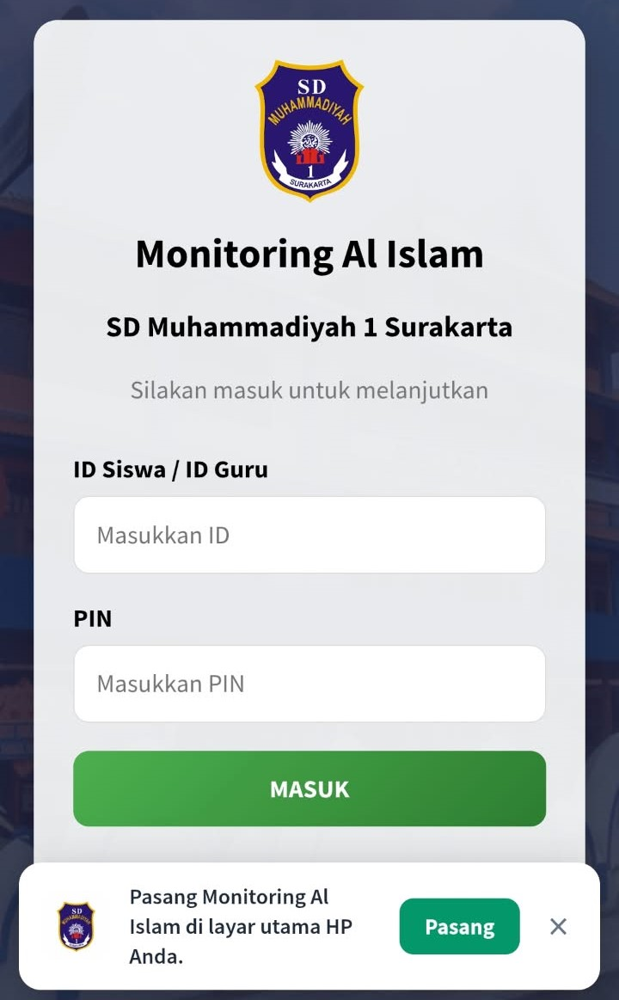
Pemasangan cukup sekali. Setelah terpasang, Anda tidak perlu mengetik alamat lagi. Kotak Pasang muncul di HP Android.
Masuk dan Keluar
Semua pengguna memakai halaman yang sama.
- Buka aplikasi dari ikon di beranda HP, atau lewat alamat di bagian Cara Membuka dan Memasang Aplikasi.
- Ketik ID Siswa / ID Guru.
- Ketik PIN.
- Tekan tombol hijau MASUK.
- Tunggu sampai dashboard tampil. Untuk keluar, tekan KELUAR di kanan atas.
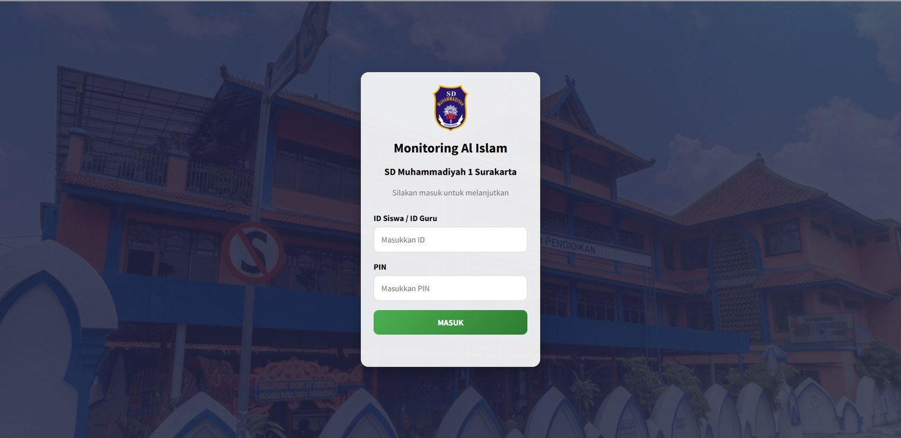
Pesan ID atau PIN salah berarti ID atau PIN keliru, atau akun tidak aktif. Hubungi Admin jika lupa PIN. Selalu tekan KELUAR setelah selesai di perangkat bersama.
Panduan Guru Kelas
Untuk Wali Kelas yang mengampu satu kelas.
Mengenal dashboard
- Bagian atas: nama Anda, tanda Wali Kelas • Kelas, dan tombol KELUAR.
- Tiga kartu: Siswa Aktif, Kelas, dan Akses.
- Monitoring Aktivitas Siswa: enam kartu menu untuk mencatat.
- Daftar Siswa di bawah, dengan tombol REKAP RIWAYAT KELAS.
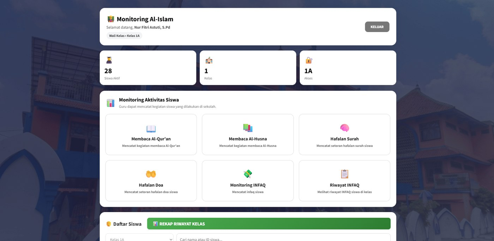
Mencatat kegiatan siswa
Semua formulir berpola sama: pilih siswa, periksa tanggal (terisi hari ini), isi data, tekan Simpan. Tekan Batal untuk menutup tanpa menyimpan. Sholat 5 waktu diisi dari akun siswa, guru melihatnya di riwayat.
Membaca Al-Qur'an
- Tekan kartu Membaca Al-Qur'an.
- Pilih nama di Pilih Siswa.
- Periksa Tanggal.
- Pilih Nama Surah.
- Isi Ayat Mulai dan Ayat Akhir.
- Tekan Simpan.
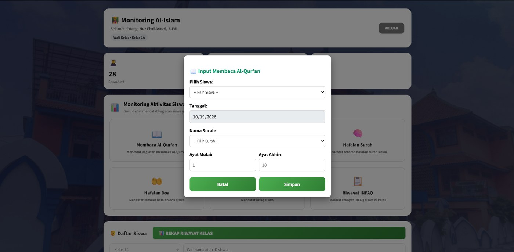
Ayat akhir tidak boleh lebih kecil dari ayat mulai. Catatan guru tampil sebagai Didampingi di riwayat.
Membaca Al-Husna
- Tekan kartu Membaca Al-Husna.
- Pilih siswa dan periksa tanggal.
- Isi Halaman Mulai dan Halaman Akhir.
- Tekan Simpan.
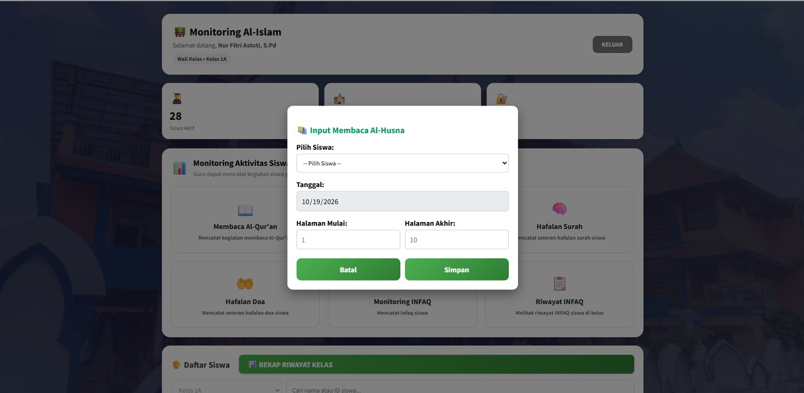
Hafalan Surah
- Tekan kartu Hafalan Surah.
- Tunggu tulisan Memuat data... berganti pilihan.
- Pilih siswa, periksa tanggal, pilih Nama Surah.
- Isi Ayat Mulai dan Ayat Akhir.
- Pilih Status: Lancar atau Belum Lancar.
- Tekan Simpan.
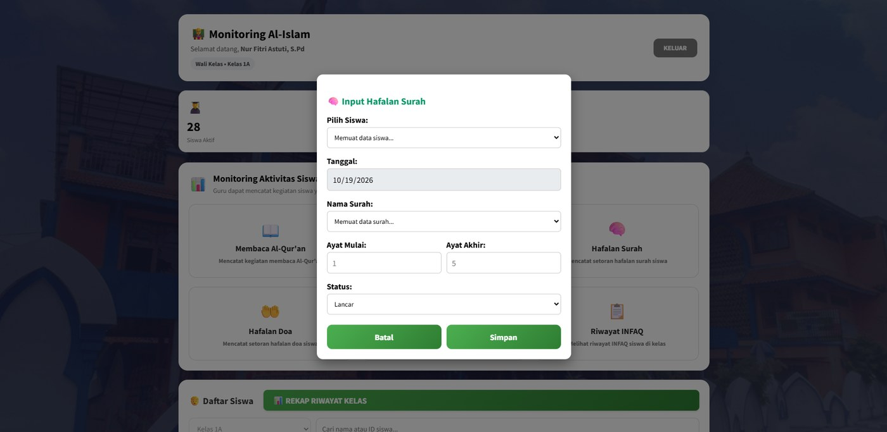
Hafalan Doa
- Tekan kartu Hafalan Doa.
- Pilih siswa dan periksa tanggal.
- Pilih Nama Doa.
- Pilih Status: Lancar atau Belum Lancar.
- Tekan Simpan.
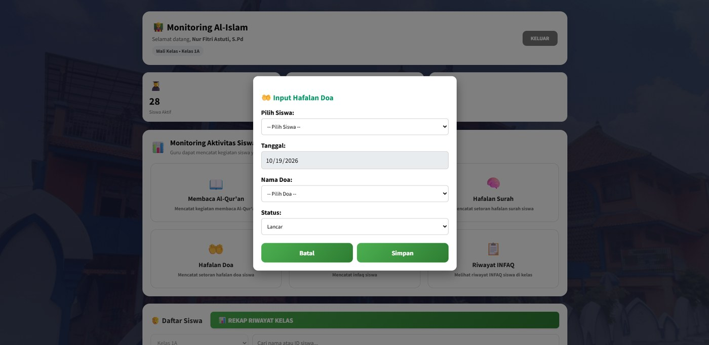
INFAQ satu kelas
- Tekan kartu Monitoring INFAQ.
- Tanggal dan kelas terisi otomatis.
- Pilih Ya untuk siswa yang berinfaq. Gulir untuk melihat semua nama.
- Tekan Simpan. Pesan hijau menyebut jumlah siswa yang tersimpan.
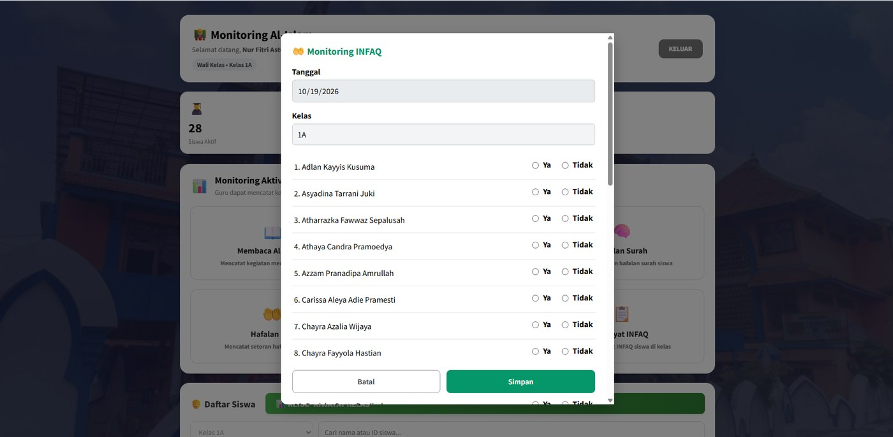
Menu INFAQ khusus Wali Kelas. Hanya siswa yang dipilih Ya yang disimpan. Jika belum ada yang dipilih, muncul peringatan.
Melihat siswa, riwayat, dan rekap
Mencari siswa
- Gulir ke Daftar Siswa.
- Ketik nama atau ID di kolom Cari.
- Kartu siswa menampilkan nama, ID, kelas, dan tombol Riwayat.
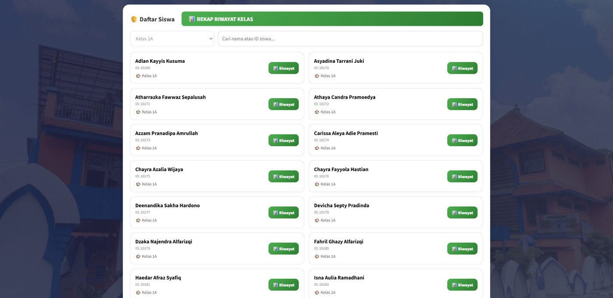
Riwayat satu siswa
- Tekan Riwayat pada kartu siswa.
- Atur Tanggal Mulai dan Tanggal Akhir, lalu TAMPILKAN. Atau pilih tombol cepat: Hari Ini, 7, 14, atau 30 Hari Terakhir.
- Tekan kartu ringkasan (Total, Sholat, Al-Qur'an, dan lainnya) untuk menyaring tabel.
- Tekan ← Kembali untuk keluar dari halaman.
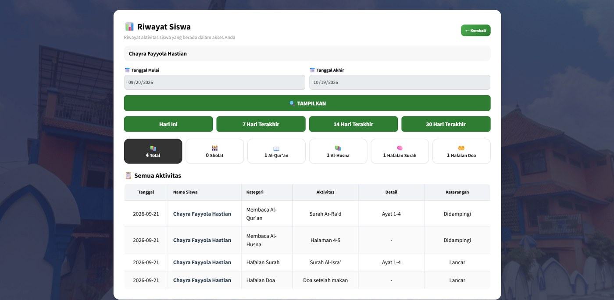
Rekap seluruh kelas
- Tekan tombol hijau REKAP RIWAYAT KELAS.
- Atur tanggal lalu TAMPILKAN.
- Tabel memuat aktivitas semua siswa dengan kolom Nama Siswa.
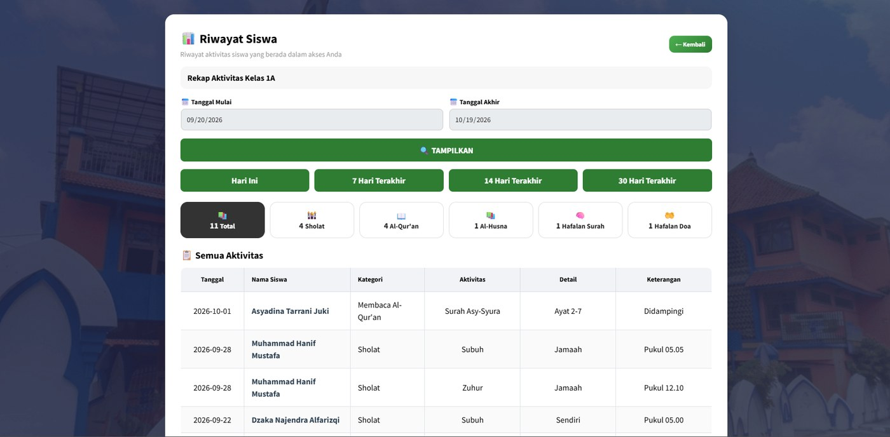
Riwayat INFAQ
- Tekan kartu Riwayat INFAQ.
- Daftar menampilkan tanggal, ID, dan nama siswa yang berinfaq.
- Tekan Tutup untuk menutup jendela.
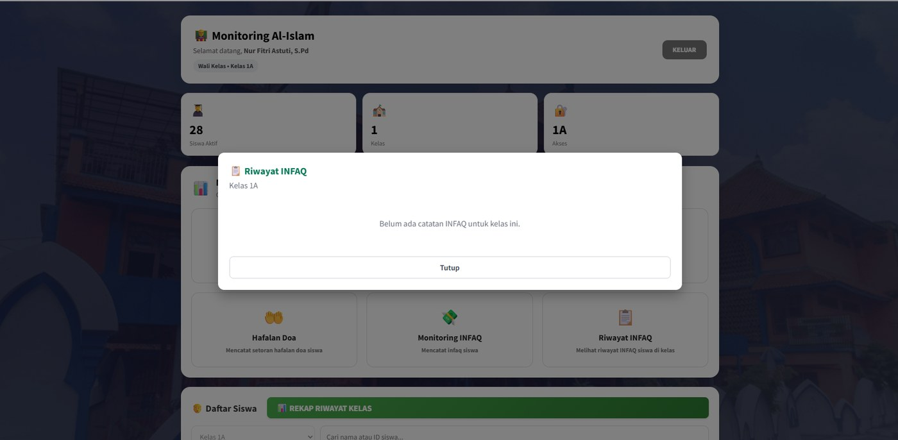
Panduan Guru Mapel
Tampilan sama dengan Guru Kelas, tetapi untuk beberapa kelas.
- Masuk dengan ID Guru dan PIN.
- Pada kartu Akses, periksa kelas yang Anda ampu.
- Di Daftar Siswa, pilih Semua Kelas atau satu kelas.
- Cari siswa lewat kolom pencarian.
- Catat lewat kartu Al-Qur'an, Al-Husna, Hafalan Surah, atau Hafalan Doa. Langkahnya sama dengan Guru Kelas.
- Lihat Riwayat siswa atau REKAP RIWAYAT KELAS, lalu saring dengan pilihan kelas.
Menu INFAQ khusus Wali Kelas. Jika muncul pesan Guru Mapel belum memiliki kelas, minta Admin menambahkan kelas Anda di lembar GURU_KELAS.
Panduan Admin
Memantau semua kelas dan mengelola akun lewat Google Spreadsheet.
Memantau di aplikasi
- Masuk dengan akun berlevel ADMIN. Kartu Akses menampilkan SEMUA.
- Pilih Semua Kelas atau satu kelas di Daftar Siswa.
- Tekan Riwayat pada siswa, atau REKAP RIWAYAT KELAS untuk semua kelas.
- Catat kegiatan siswa mana pun lewat kartu Al-Qur'an, Al-Husna, Hafalan Surah, atau Hafalan Doa.
Mengelola data di Spreadsheet
| Tugas | Lembar | Yang diisi |
|---|---|---|
| Tambah siswa | SISWA | ID_Siswa, Nama, Kelas, PIN, Status = Aktif |
| Tambah guru | GURU | ID_Guru, Nama, PIN, Status = Aktif, Level, Kelas (Guru Kelas) |
| Atur kelas Guru Mapel | GURU_KELAS | Satu baris per kelas: ID_Guru dan Kelas |
| Ubah daftar surah / doa | MASTER_SURAH / MASTER_DOA | Nama di kolom B, satu per baris, mulai baris 2 |
| Nonaktifkan akun | SISWA atau GURU | Ubah Status dari Aktif ke Nonaktif |
Kolom Level: tulis ADMIN untuk Admin, GURU_MAPEL untuk Guru Mapel, kosongkan untuk Guru Kelas. Akun yang tidak berstatus Aktif tidak bisa masuk. Menu INFAQ tidak dipakai Admin.
Panduan Wali Siswa
Mencatat kegiatan anak di rumah dan melihat riwayatnya.
Masuk
- Ketik ID Siswa dan PIN anak, lalu tekan MASUK.
- Dashboard menampilkan nama, kelas, dan enam kartu menu.
Sholat 5 Waktu
- Tekan kartu Sholat 5 Waktu dan periksa tanggal.
- Centang sholat yang sudah dikerjakan: Subuh, Zuhur, Asar, Magrib, Isya.
- Pilih cara Jamaah atau Sendiri, lalu jam dan menit.
- Tekan SIMPAN CATATAN.
Sholat yang sudah dicatat pada tanggal yang sama ditolak. Sholat lain yang belum tercatat tetap tersimpan.
Al-Qur'an dan Al-Husna
- Tekan kartu Al-Qur'an atau Al-Husna.
- Al-Qur'an: pilih surah, isi ayat mulai dan akhir. Al-Husna: isi halaman mulai dan akhir.
- Pilih Pendampingan: Sendiri atau Didampingi, lalu simpan.
Hafalan Surah dan Hafalan Doa
- Tekan kartu Hafalan Surah atau Hafalan Doa.
- Pilih surah dan isi ayat, atau pilih doa.
- Pilih Status: Lancar atau Belum Lancar, lalu simpan.
Riwayat
- Tekan kartu Riwayat Monitoring Siswa.
- Atur rentang tanggal, lalu tampilkan.
- Tekan kartu ringkasan untuk menyaring tabel. Tampilannya sama dengan Riwayat Siswa di Panduan Guru Kelas.
Catatan yang sama pada tanggal dan jenis yang sama tidak bisa disimpan dua kali.